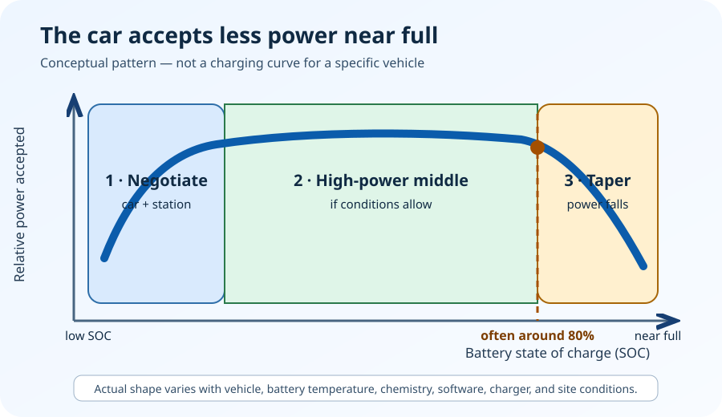

01 · Visual model
Offer, accept, taper

Text equivalent: At low charge, the station and car negotiate. If the battery and equipment allow, the car accepts high power through a middle region. Near full, accepted power falls. The location and shape of that taper vary, so the live rate matters more than a memorized threshold.
02 · Read the display
Separate energy from power
kWh is energy
A 60 kWh usable battery stores an amount of energy. Percentage points describe a fraction of that usable capacity.
kW is power
The charging screen’s kW value is the present rate of energy transfer. The vehicle can accept less than the station’s advertised maximum.
SOC is fullness
State of charge is the battery’s current energy expressed as a percentage of usable capacity. It is not a charging-speed gauge.
03 · Worked example
Fewer percentage points, similar minutes
Use an invented 60 kWh battery. From 20% to 80%, the car adds 36 kWh. At an idealized average of 120 kW, that is 0.3 hours, or 18 minutes. From 80% to 100%, it adds only 12 kWh. If tapering lowers the average to 40 kW, that is also 0.3 hours.
04 · Reality check
There is no universal 80% rule
Battery temperature, chemistry and condition, vehicle software, the car’s power limit, charger sharing, and site conditions all change the curve. DOE guidance says many batteries reduce power in the 80–100% range, while NREL’s modeled curves generally fall around 80–85%. Neither source says every driver must unplug at one number.
Use the actual trip: Continue when the next leg and your chosen margin require the energy. Stop when slower added range is no longer worth the time. Follow the vehicle and station instructions.
05 · Practice
Run a 15-minute paper session
- Choose an imaginary start SOC: 25%.
- Write the next-leg need and a margin: 65% total.
- Sketch a live display that holds 120 kW, then falls to 50 kW after 82%.
- Circle the earliest SOC that meets the need. Explain why the charger’s 150 kW label does not override the observed 50 kW rate.
Success: your stop decision uses route need plus the observed acceptance rate, not a universal percentage.
Knowledge check
- What does the charger’s maximum kW rating describe?
- Why can 80–100% take longer per percentage point?
- Name two conditions that can reshape the curve.
Reveal answer guidance
The rating is the equipment’s possible output, while the car sets what it accepts. Tapering lowers average power, so each remaining unit of energy takes longer. Temperature, chemistry, battery condition, software, vehicle limits, charger sharing, and site conditions are valid examples.
06 · Next steps
Compare the guide with real evidence
Open NREL’s September 2023 report and inspect Figure 5: look for where each modeled curve begins to fall. Then read the Alternative Fuels Data Center charging overview for the factors that change charging time. The source ledger maps each claim and limitation.